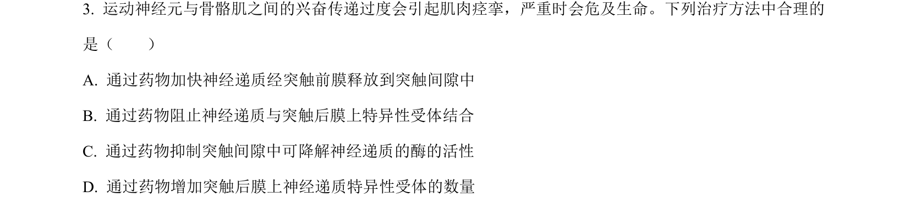
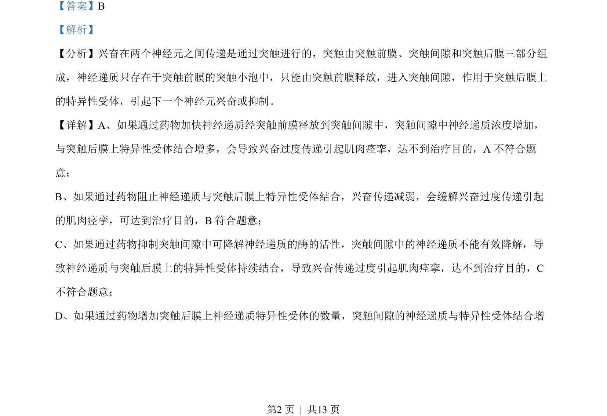
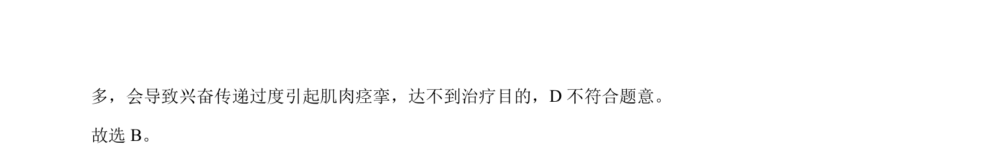

考点：突触 神经递质 受体 兴奋传递

本题通过药物对突触传递的影响，考查神经调节中兴奋传导与传递机制。


📄 原 PDF 第 2 页：
素材/真题/吉林/2008-2024·（吉林）生物高考真题/2022年高考生物试卷（全国乙卷）（解析卷）.pdf
【答案】B 【解析】 【分析】兴奋在两个神经元之间传递是通过突触进行的，突触由突触前膜、突触间隙和突触后膜三部分组 成，神经递质只存在于突触前膜的突触小泡中，只能由突触前膜释放，进入突触间隙，作用于突触后膜上 的特异性受体，引起下一个神经元兴奋或抑制。 【详解】A、如果通过药物加快神经递质经突触前膜释放到突触间隙中，突触间隙中神经递质浓度增加， 与突触后膜上特异性受体结合增多，会导致兴奋过度传递引起肌肉痉挛，达不到治疗目的，A 不符合题 意； B、如果通过药物阻止神经递质与突触后膜上特异性受体结合，兴奋传递减弱，会缓解兴奋过度传递引起 的肌肉痉挛，可达到治疗目的，B符合题意； C、如果通过药物抑制突触间隙中可降解神经递质的酶的活性，突触间隙中的神经递质不能有效降解，导 致神经递质与突触后膜上的特异性受体持续结合，导致兴奋传递过度引起肌肉痉挛，达不到治疗目的，C 不符合题意； D、如果通过药物增加突触后膜上神经递质特异性受体的数量，突触间隙的神经递质与特异性受体结合增 。